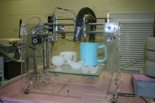

Images + Videos
FAB@HOME Robot
This desktop rapid prototyping machine, which has a Cartesian architecture, was retrofitted to use water as a building material. It is capable of building up to 200mm across and 135mm high in a -23°C environment.

Fab@Home desktop rapid prototyping machine.
Adept Cobra 600 Robot
Produces finely detailed 3D ice objects up to 300mm across and 200mm high. The Cobra is faster, more accurate and more robust than the FAH. At the same time, it was not designed for RP, therefore more retrofitting is necessary.

Adept Cobra 600 robot.

Micro-nozzle fluid delivery system
This dual-nozzle system delivers a jet of water or brine at a rate of 3 -10 microlitres per second; it was designed to be compact, well-insulated, and rigid. Temperature-controlled heating rope is used to prevent fluid in the liquid lines and the valves from freezing before reaching the nozzles.

Dual nozzle fluid delivery system.

Flat-spray nozzle fluid delivery system - McGill Mechanical Engineering Project '09
The flat-spray nozzle is designed to yield a more uniform spray distribution than hollow or solid-cone spray patterns. The spray angle affects the layer thickness of the part being built: the larger the angle, the smaller the layer thickness. Thin layers are generally preferable, so results are better with a wider spray angle.
The Adept Cobra 600 creating a wall with the flat-spray nozzle.
Scaffolding
A support structure is required to produce slanted or overhanging parts. After several options were explored, we decided to use a solution of potassium chloride in water (KCl brine), to build the support material. Both water and KCl brine freeze in deposition environment of -23°C. Thus, when a part is completed, it is placed in a -4°C environment and the frozen KCl brine is melted away, leaving the finished ice part.
 3.JPG)
 4.JPG)
Left: Beer mug with brine scaffolding. Right: Finished beer mug.


Manufacturing time
With the current deposition systems, build times range between five and twenty hours for small and medium-scale objects.
More Images:


Left: Martini glass. Right: Egg carton.


Left: Twisted Koch curve. Right: Sine curve.


Left: Ice bunny (3D computer model for printing courtesy of the Stanford Computer Graphics Laboratory). Right: SinCirc.


Ultimately, we plan to scale up again, this time to the architectural scale. To achieve this result, we believe that the use of a much larger robot, along with a slush/snow delivery system - which is currently in the development process - will enable the robotic construction of small dwelling-like structures made entirely of water and ice. Ideally, this system will be designed for outdoor deployment, using the natural winter environment as its workspace. The varying outdoor temperatures, humidity and wind speeds will require the ability to continuously adapt the rate of flow and the speed of deposition to optimize the ice building process.